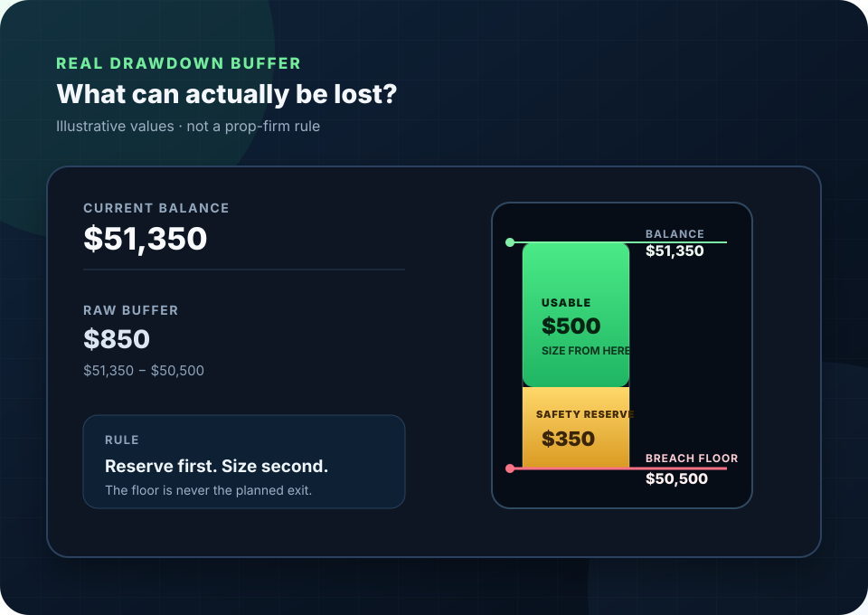

Futures risk guide
Risk Per Trade for Small Futures Accounts: Size From the Real Drawdown Buffer
The account label does not decide position size. The money you can actually lose, the technically valid stop, the contract’s tick value, and trading costs do.

The governing principle
Position Size Comes From Risk Capacity, Not the Account Name
A “$50,000” prop evaluation can have far less loss capacity than a $4,000 personal account. One is a nominal program label; the other is actual cash equity. Treating them as interchangeable produces false precision.
Start with current equity
Current equity is real capital. A trader may still impose a personal stop-trading floor and must leave room for margin, open-position variation, fees, and errors.
Start with the current breach floor
The nominal balance is not spendable risk. Use the firm’s live balance or equity and its current rule-defined floor. If the floor trails, refresh it before every trade.
Balance minus floor
The distance between current equity or balance and the level that ends trading under the applicable rule or personal plan.
Room that is not risked
A separate cushion for slippage, gaps, rejected exits, data differences, rule calculations, and ordinary human error.
What remains after reserve
The protected base from which the trader chooses a maximum planned loss for the next trade.
The sizing equations
Three Calculations, in Order
These equations describe planned risk. They do not guarantee the final fill because markets can gap or slip through a stop.
Find usable buffer
usable buffer = current equity or balance − breach floor − safety reserve
If this is zero or negative, there is no risk capacity for a new trade.
Price the planned loss
planned trade loss = stop ticks × tick value × contracts + estimated commissions and slippage
When costs are entered per contract, multiply those costs by the number of contracts too.
Fit whole contracts
maximum contracts = floor(risk budget ÷ estimated loss per contract)
Always round down. A result below one means skip the trade.
Structure before size
Stop Placement Must Come Before Contract Count
A stop belongs where the trade thesis is invalidated, not where a preferred number of contracts makes the dollar loss look comfortable.
-
Define the trade and its invalidation
Use market structure, volatility, or another tested method to identify the price that proves the setup wrong. See how futures stop orders work before assuming the stop price is a guaranteed fill.
-
Convert the stop to ticks
Measure entry to stop in the contract’s minimum price increments. Keep tick size and tick value separate.
-
Calculate loss per contract
Multiply stop ticks by tick value, then add a conservative estimate for round-turn commissions and slippage.
-
Reduce size or pass
Divide the chosen risk budget by loss per contract and round down. Never pull a valid stop closer just to force one more contract into the trade.
Know which floor moves
Real-Time, End-of-Day, and Static Drawdown Behave Differently
The calculation is only as accurate as the floor entered. Read the current official rules for the specific account; drawdown labels are not standardized across firms.
Unrealized equity can move the floor
If the rule follows peak unrealized equity, an open winner can ratchet the breach floor upward before the position is closed. Giving back that open profit can leave less usable room even after a profitable exit.
The floor updates at the stated daily mark
Intraday peaks may not move the trailing reference under an end-of-day method, but the account can still have separate intraday loss or liquidation rules. Verify the exact calculation time.
The floor stays fixed
A static floor does not ratchet upward with profit. It is still a hard boundary, and other limits may apply. Compare the mechanics in the static-versus-trailing-drawdown guide.
Protect the account’s last room
When the Drawdown Buffer Gets Thin.
Position size should contract as the current floor rises or the balance falls. The same stop can fit five contracts with a $1,500 usable buffer, one contract with a $500 usable buffer, and zero contracts after the buffer shrinks further.
Do not treat the breach floor as an acceptable stop level. A market order can fill beyond the intended price, a prop dashboard can calculate equity differently from a local platform, and a real-time trail may move while the position is open. Preserve a separate safety reserve and stop opening new risk before that reserve is touched.
For a companion explanation of the moving-floor mechanics, read MimikTrader’s explanation of trailing drawdown.
Interactive calculator
Futures Risk Calculator
Enter the account’s current numbers and the stop the setup actually requires. The percentage is your chosen allocation of usable buffer, not a universal recommendation.
Calculated result
What fits now
- Remaining raw buffer
- $1,500.00
- Usable buffer after reserve
- $1,000.00
- Maximum planned dollar risk
- $50.00
- Estimated loss per contract
- $44.00
- Maximum whole contracts
- 1
1 contract fits the entered assumptions.
Calculator boundary: this is a planning estimate, not a loss guarantee. Stops can slip, fees vary, and a real-time trailing floor can change while a trade is open.
Worked examples
Three Accounts, Three Calculation Outcomes
Each example uses a deliberately chosen reserve and risk allocation. The percentages demonstrate the calculation; they are not recommendations.
A small account trading one MES
The trader has $4,000 in equity, refuses to trade below $2,500, and keeps another $500 as a safety reserve. A technically valid 32-tick MES stop fits one contract.
| Raw buffer | $4,000 − $2,500 | $1,500 |
|---|---|---|
| Usable buffer | $1,500 − $500 reserve | $1,000 |
| Chosen risk budget | 5% × $1,000 | $50 |
| Loss per MES | 32 ticks × $1.25 + $4 costs | $44 |
| Maximum contracts | floor($50 ÷ $44) | 1 MES |
An unrealized equity peak shrinks the room
Assume a rule trails peak unrealized equity dollar-for-dollar. The balance is $51,350. After an open-position peak moves the floor from $49,500 to $50,500, the same plan drops from five MES to one.
| Calculation | Before floor rises | After floor rises |
|---|---|---|
| Current balance | $51,350 | $51,350 |
| Current breach floor | $49,500 | $50,500 |
| Usable after $350 reserve | $1,500 | $500 |
| Chosen risk budget | 10% = $150 | 10% = $50 |
| Loss per MES | $29 | $29 |
| Maximum contracts | 5 MES | 1 MES |
This is a mechanism example, not a current rule for any named firm. Check the account provider’s official rule page and live dashboard.
The trade must be skipped
The technically valid stop costs more than the planned risk for one MES. Shrinking the stop would invalidate the setup, so the correct contract count is zero.
| Usable buffer | ($2,050 − $1,800) − $150 reserve | $100 |
|---|---|---|
| Chosen risk budget | 20% × $100 | $20 |
| Loss per MES | 20 ticks × $1.25 + $4 costs | $29 |
| Maximum contracts | floor($20 ÷ $29) | 0 — skip |
Exchange specification: CME Group lists the MES outright minimum price fluctuation as 0.25 index points, equal to $1.25 per tick. See the official Micro E-mini Equity Index Futures FAQ. Specification checked August 5, 2026.
Calculation failures to avoid
Common Futures Sizing Mistakes
A prop account’s advertised balance does not describe the remaining loss allowance.
This reverses the logic and pressures the trader to use a technically weak stop.
The floor is a failure boundary, not a target fill price. Preserve a reserve above it.
Commissions and slippage scale with contracts and can turn a marginal fit into an oversize trade.
A trailing floor may have changed since the prior trade or during an open position.
Position size is discrete. Always floor the result, even when the decimal is close to the next contract.
Final decision checklist
Before the Order Is Sent
If any answer is unknown, pause. Unknown inputs do not become safe because the setup looks attractive.
Current balance or equity: verified from the account now, not remembered from yesterday.
Current breach floor: taken from the applicable live rule calculation.
Safety reserve: held outside the planned risk budget.
Valid stop: placed where the trade idea is wrong, then converted to ticks.
Tick value and costs: confirmed for the exact contract and broker schedule.
Whole contracts: rounded down; zero means skip.
Frequently asked questions
Small-Account Futures Risk Questions
Does a $50,000 prop account mean $50,000 is available to lose?
No. The nominal label is not the loss allowance. Use the account’s current balance or equity, subtract the current breach floor, then subtract a separate safety reserve.
Should stop placement come before contract count?
Yes. Identify the technically valid stop first, convert its distance to dollars per contract, add estimated commissions and slippage, and then calculate how many whole contracts fit. If one does not fit, skip the trade.
What is usable drawdown buffer?
Usable drawdown buffer is current equity or balance minus the current breach floor minus a safety reserve. It is the protected base from which a trader can choose a planned risk budget.
When should a futures trade be skipped?
Skip the trade when the estimated loss for one contract, using the technically valid stop plus estimated costs, is greater than the maximum planned dollar risk.
Sources and editorial disclosure
- CME Group: Micro E-mini Equity Index Futures FAQ for the quoted MES tick specification.
- MimikTrader: Trailing Drawdown Explained as a companion explanation of trailing-drawdown mechanics.
- Grizzly Parrot Trading: Static vs. Trailing Drawdown for the internal comparison guide.
Exchange specification checked August 5, 2026.